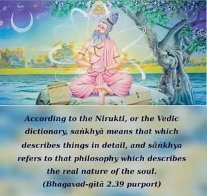

Thus far I have described this knowledge to you through analytical study. Now listen as I explain it in terms of working without fruitive results. O son of Pṛthā, when you act in such knowledge you can free yourself from the bondage of works.

According to the Nirukti, or the Vedic dictionary, saṅkhyā means that which describes things in detail, and sāṅkhya refers to that philosophy which describes the real nature of the soul. And yoga involves controlling the senses. Arjuna’s proposal not to fight was based on sense gratification. Forgetting his prime duty, he wanted to cease fighting, because he thought that by not killing his relatives and kinsmen he would be happier than by enjoying the kingdom after conquering his cousins and brothers, the sons of Dhṛtarāṣṭra. In both ways, the basic principles were for sense gratification. Happiness derived from conquering them and happiness derived by seeing kinsmen alive are both on the basis of personal sense gratification, even at a sacrifice of wisdom and duty. Kṛṣṇa, therefore, wanted to explain to Arjuna that by killing the body of his grandfather he would not be killing the soul proper, and He explained that all individual persons, including the Lord Himself, are eternal individuals; they were individuals in the past, they are individuals in the present, and they will continue to remain individuals in the future, because all of us are individual souls eternally. We simply change our bodily dress in different manners, but actually we keep our individuality even after liberation from the bondage of material dress. An analytical study of the soul and the body has been very graphically explained by Lord Kṛṣṇa. And this descriptive knowledge of the soul and the body from different angles of vision has been described here as Sāṅkhya, in terms of the Nirukti dictionary. This Sāṅkhya has nothing to do with the Sāṅkhya philosophy of the atheist Kapila. Long before the imposter Kapila’s Sāṅkhya, the Sāṅkhya philosophy was expounded in the Śrīmad-Bhāgavatam by the true Lord Kapila, the incarnation of Lord Kṛṣṇa, who explained it to His mother, Devahūti. It is clearly explained by Him that the puruṣa, or the Supreme Lord, is active and that He creates by looking over the prakṛti. This is accepted in the Vedas and in the Gītā. The description in the Vedas indicates that the Lord glanced over the prakṛti, or nature, and impregnated it with atomic individual souls. All these individuals are working in the material world for sense gratification, and under the spell of material energy they are thinking of being enjoyers. This mentality is dragged to the last point of liberation when the living entity wants to become one with the Lord. This is the last snare of māyā, or sense gratificatory illusion, and it is only after many, many births of such sense gratificatory activities that a great soul surrenders unto Vāsudeva, Lord Kṛṣṇa, thereby fulfilling the search after the ultimate truth.
Arjuna has already accepted Kṛṣṇa as his spiritual master by surrendering himself unto Him: śiṣyas te ’haṁ śādhi māṁ tvāṁ prapannam. Consequently, Kṛṣṇa will now tell him about the working process in buddhi-yoga, or karma-yoga, or in other words, the practice of devotional service only for the sense gratification of the Lord. This buddhi-yoga is clearly explained in Chapter Ten, verse ten, as being direct communion with the Lord, who is sitting as Paramātmā in everyone’s heart. But such communion does not take place without devotional service. One who is therefore situated in devotional or transcendental loving service to the Lord, or, in other words, in Kṛṣṇa consciousness, attains to this stage of buddhi-yoga by the special grace of the Lord. The Lord says, therefore, that only to those who are always engaged in devotional service out of transcendental love does He award the pure knowledge of devotion in love. In that way the devotee can reach Him easily in the ever-blissful kingdom of God.
Thus the buddhi-yoga mentioned in this verse is the devotional service of the Lord, and the word Sāṅkhya mentioned herein has nothing to do with the atheistic sāṅkhya-yoga enunciated by the imposter Kapila. One should not, therefore, misunderstand that the sāṅkhya-yoga mentioned herein has any connection with the atheistic Sāṅkhya. Nor did that philosophy have any influence during that time; nor would Lord Kṛṣṇa care to mention such godless philosophical speculations. Real Sāṅkhya philosophy is described by Lord Kapila in the Śrīmad-Bhāgavatam, but even that Sāṅkhya has nothing to do with the current topics. Here, Sāṅkhya means analytical description of the body and the soul. Lord Kṛṣṇa made an analytical description of the soul just to bring Arjuna to the point of buddhi-yoga, or bhakti-yoga. Therefore, Lord Kṛṣṇa’s Sāṅkhya and Lord Kapila’s Sāṅkhya, as described in the Bhāgavatam, are one and the same. They are all bhakti-yoga. Lord Kṛṣṇa said, therefore, that only the less intelligent class of men make a distinction between sāṅkhya-yoga and bhakti-yoga (sāṅkhya-yogau pṛthag bālāḥ pravadanti na paṇḍitāḥ).
Of course, atheistic sāṅkhya-yoga has nothing to do with bhakti-yoga, yet the unintelligent claim that the atheistic sāṅkhya-yoga is referred to in the Bhagavad-gītā.
One should therefore understand that buddhi-yoga means to work in Kṛṣṇa consciousness, in the full bliss and knowledge of devotional service. One who works for the satisfaction of the Lord only, however difficult such work may be, is working under the principles of buddhi-yoga and finds himself always in transcendental bliss. By such transcendental engagement, one achieves all transcendental understanding automatically, by the grace of the Lord, and thus his liberation is complete in itself, without his making extraneous endeavors to acquire knowledge. There is much difference between work in Kṛṣṇa consciousness and work for fruitive results, especially in the matter of sense gratification for achieving results in terms of family or material happiness. Buddhi-yoga is therefore the transcendental quality of the work that we perform.